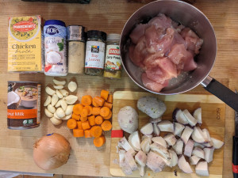
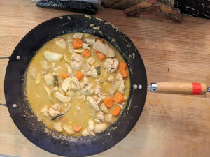

Chicken Taro
 
Ingredients:
- taro.
- flower, salt, chicken.
- onion, ginger powder, garlic curry leaves.
- curry powder, chicken broth, carrots.
How to make it:
Boil or steam taro.
- Cut chicken and mix flower and salt.
- Cook chicken in pan. After a few minutes, cover pan and remove chicken.
- Add onion, ginger powder, garlic, and curry leaves to pan.
- Add curry powder (2 tbsp), chicken broth, taro, and carrots and fry for a few minutes.
- Add chicken and fry for a few min.
- Add a few cups of water and keep frying for 15 min.
Links: * Video